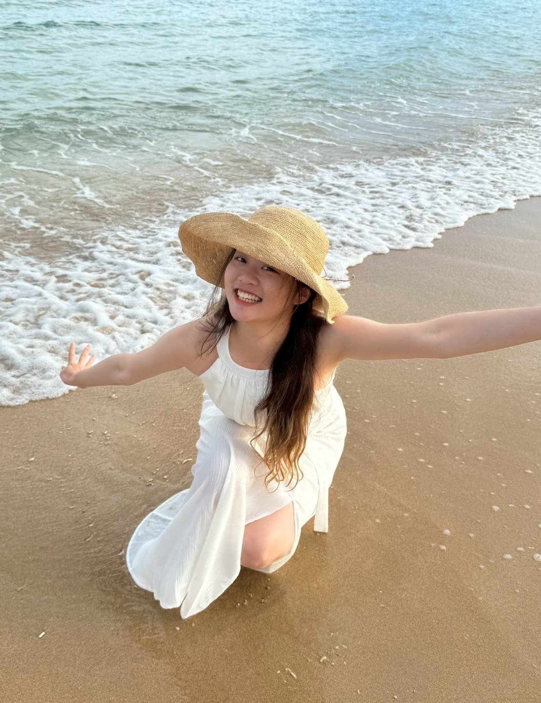

Interspeech 2026Accepted

I study how machines listen. I also teach, choreograph, and run science camps.
Electrical engineering student at National Taiwan University, graduating June 2027. Interested in neural interpretability and activation steering, multimodal representation learning, audio-language and vision-language-action models, and embodied intelligence.

Pretraining.
Still training.
Inference-time steering on DeSTA and Audio Flamingo for training-free control of reasoning in large audio-language models. Led CAGA, an independent project on per-item neuron attribution and activation steering.
Project Tapestry (AI Alliance): communication-efficient distributed training when workers run at different speeds, with a focus on stragglers and communication bottlenecks. Evaluating DiLoCo-style low-communication training and synchronization strategies.
Multimodal foundation models and vision-language-action models for embodied intelligence.
Signal processing, hyperparameter and data augmentation experiments for estimating human pose from WiFi channel state information.
Four checkpoints saved so far.
* and † are the contribution marks used in each paper.
Gradient descent for humans.
With the TA team, built and ran the first Teaching Monster Challenge, where AI agents produce complete instructional videos for a target learner. Built a video-to-video extension that answers a student’s question with a short narrated explanation from a lecture frame.
Designed and graded homework on prompt-based tasks and model editing methods, including ROME and MEMIT.
Multimodal language models and AI agents.
An AI-enhanced smart oscilloscope running a quantized and pruned CNN on-device.
Selected for the second-stage training and selection camp for Taiwan’s International Mathematical Olympiad team.
Individual Gold Medal, one of 29 gold medalists nationwide. Team Silver Medal as team captain.
Things I overfit to for a semester.
One-step generative policy learning with drifting models for offline reinforcement learning. Selected for oral presentation at the course mini-conference, which I presented for the team.
Explored detection-guided image layer extraction and image inpainting.
Transfer learning for a low-resource Indigenous language of Taiwan.
Supported oral-session logistics and presentation operations.
Supported conference logistics and technical sessions in computational linguistics and speech and language processing.
Led a one-year student-run outreach program at Kaohsiung Senior High School, organizing science camps for Indigenous elementary-school children in rural communities.
Chinese dance lead and choreographer for NTU Electrical Engineering Night 2026. Ballet duet at the Taiwan International Open Dance Championship (Taiwan Advantage Cup), 2026.
Vice president, NTU Green Field Club, 2024 to 2026.
NTU EE women’s basketball team.
Mandarin, Taiwanese Hokkien, English. Learning French and Japanese.
Certified Emergency Medical Technician, Level 1 (EMT-1), Taiwan.